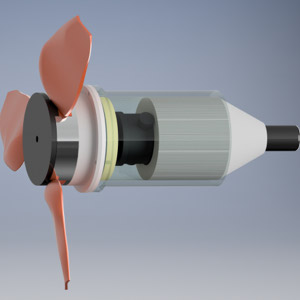

My name is Liana DiMauro, and I am an engineer in the San Francisco Bay Area with my Bachelor of Science in Mechanical Engineering and 2+ years experience.
Experience
TA Instruments
Field Service Engineer
Install, calibrate, and repair thermal lab instrumentation with minimal supervision. Developed solutions to mechanical, electrical subsystem and software malfunctions via diagnostic evaluation and customer input.
Train customers on machine and software functionality, basic maintenance, and troubleshooting skills for specic instrumentation. Recommend assay specications for optimization of data collection.
Manage daily on-site customer visits. Must independently order machine component parts, maintain equipment inventory levels, arrange travel plans, and allocate sucient time per customer visit.
Provide excellent customer service. Listen carefully to customer concerns via email, phone, and in person communication. Address issues until I am able to provide them with solutions that work for their unique situation.
Aid customers in deciding on the best service contract or repair option that ts their budget. Support customers through the process of reducing downtime to increase overall productivity.
Thermo Fisher Scientific
Design Engineering Co-op - New Product Development Department
Assisted in the development of new products and supported existing products in the laboratory plastics division.
Helped to create and implement engineering test protocols and reports for testing parts.
Created metrology for Smartscope and CMM equipment – Helped develop xtures in Solid Works and programs in MeasureMind to accurately measure plastic parts, incorporating tolerance stack up.
Supported design analysis processes including Design Verication and Technical Reviews, checking the engineering inputs and testing capability of new products and processes.
Implemented time studies, created and completed learning time frame for parts to remain functional using dimensional, pressure and user simulation testing.
Benchmark tested existing products for performance, shelf life, and durability using various techniques.
Anaren Microwave
Process Engineering Co-op - Space and Defense Department
Designed xtures in Inventor to expedite the production process.
Observed how operators on the production oor worked with devices. Worked with operators to come up with new ways to make their processes more ecient.
Conducted experiments to see how products went through processes, analyzed issues that the devices were experiencing at various stages of production.
Worked with new projects, and predicted possible problems before production started.
FltPlan.com
Customer Service / Technical Support
Attracted potential customers by answering product and service questions, suggested information about other products and services.
Resolved technical problems by clarifying the customer’s complaint, determined the cause of the problem, and explained the best solution to the problem.
Education
Rochester Institute of Technology
Aug. 2014 - May 2019
Bachelor of Science in Computer Science
Projects

Hydro Charge
Maintained the role of project manager which included organizing and planning for the team; kept team members accountable and ensured the project remained on track.
Designed and built many dierent prototypes incorporating 3D modeling, ordering parts and materials, and building in RIT's machine shop.
Wrote and executed test plans for testing the design was waterproof, functional electrically and mechanically, and durable.
Outcome: An independent, waterproof, portable turbine which had the capability to charge a cell phone when rotating at a certain rpm.